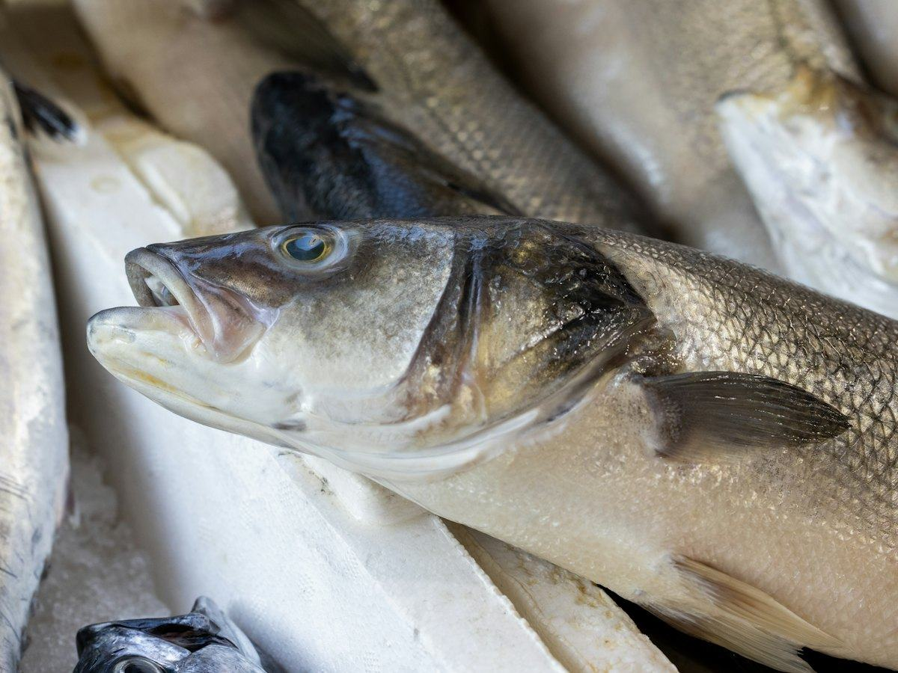
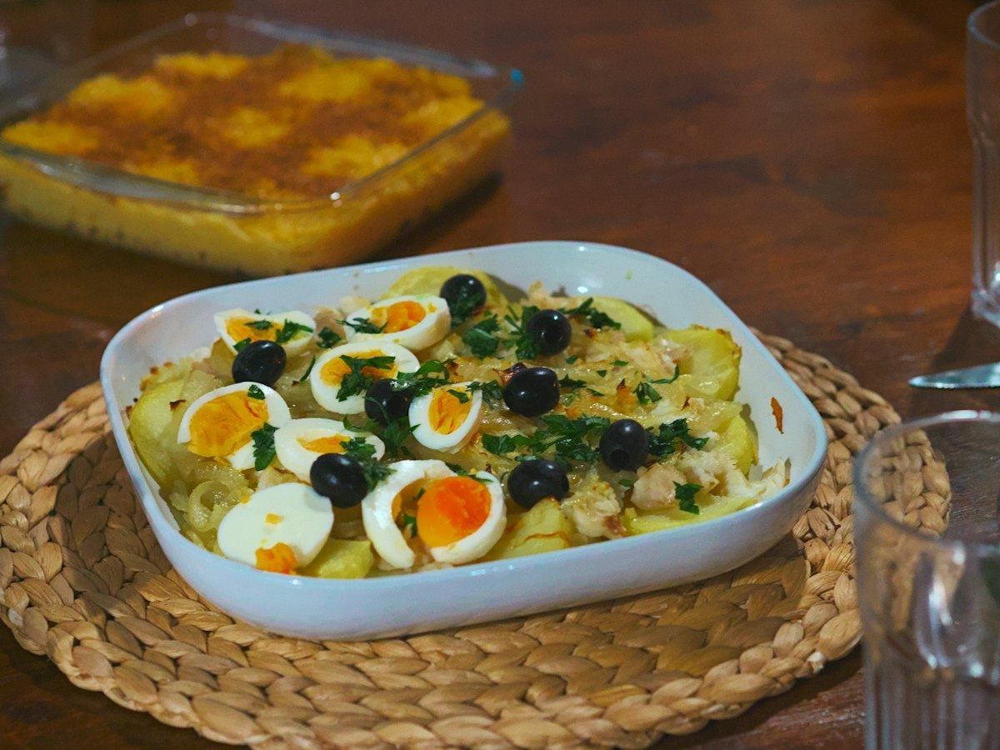
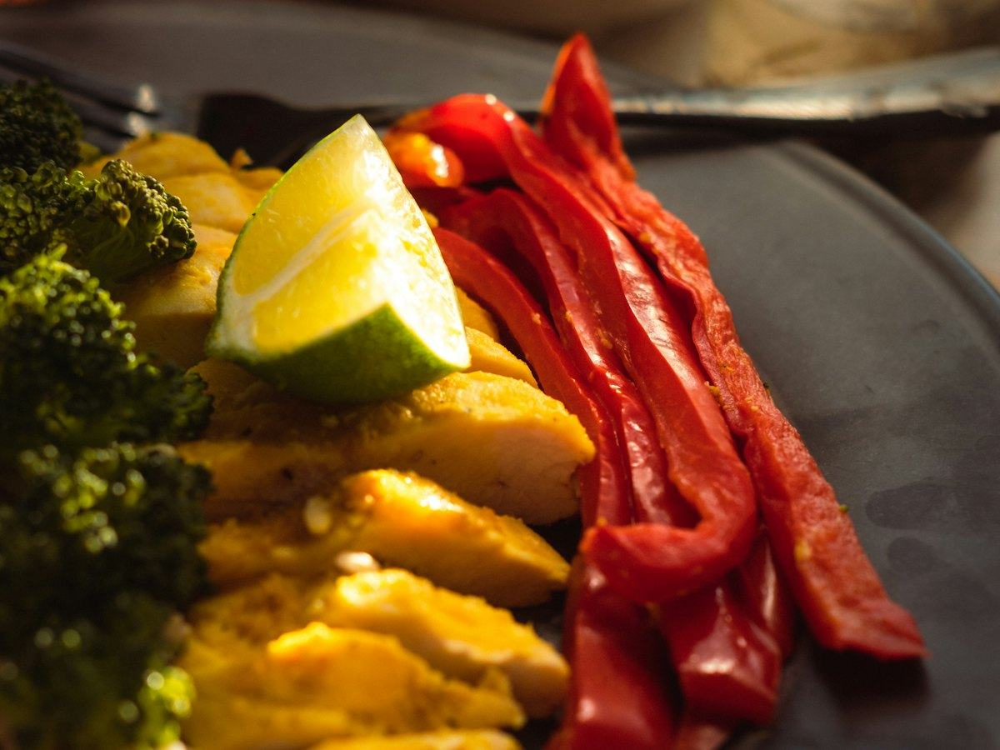
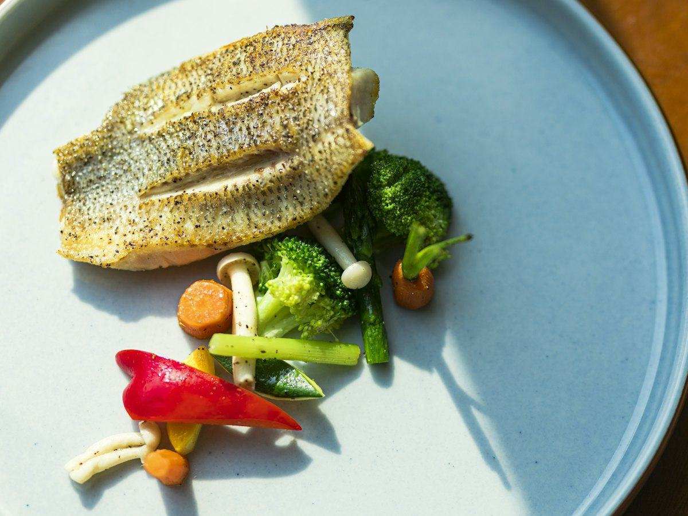

Recetas
3 recetas de salmón fáciles y saludables: al horno, en papillote y en ensalada
Salmón al horno con espárragos, en papillote con verduras y en ensalada con aguacate. Recetas fáciles con calorías, proteínas, hidratos y grasas por ración.
 Por el equipo editorial de Pombo AI
Por el equipo editorial de Pombo AI
12 nov 2026 · 7 min de lectura

La merluza es uno de los pescados más consumidos en España. Es suave, sin espinas en los lomos y muy ligera. Aquí tienes tres formas de prepararla con su tabla nutricional.
Nota sobre los datos: la base del USDA no tiene una entrada con el nombre de merluza europea. Usamos la de "whiting", que en Estados Unidos corresponde a la merluza plateada, como referencia aproximada.

Merluza cocida con patatas y una ajada de aceite y pimentón por encima. Un clásico gallego muy sencillo.
| Proteínas | 31 g | 38 % |
|---|---|---|
| Hidratos de carbono | 27 g | 34 % |
| Grasas | 10 g | 28 % |
| Fibra | 4 g |
El % indica de dónde viene la energía del plato.
Mucha proteína y muy poca grasa del pescado blanco, con los hidratos de la patata. La mayor parte de la grasa del plato viene del aceite de la ajada.

Pimientos asados como cama y la merluza encima: todo en una bandeja.
| Proteínas | 34 g | 49 % |
|---|---|---|
| Hidratos de carbono | 12 g | 18 % |
| Grasas | 10 g | 33 % |
| Fibra | 3 g |
El % indica de dónde viene la energía del plato.
Un plato ligero con mucha proteína y verdura. Ideal para la cena si buscas algo que sacie con pocas calorías.

La forma más rápida de comer pescado blanco entre semana.
| Proteínas | 36 g | 54 % |
|---|---|---|
| Hidratos de carbono | 13 g | 19 % |
| Grasas | 8 g | 27 % |
| Fibra | 4 g |
El % indica de dónde viene la energía del plato.
Es de los platos con menos calorías del blog y con mucha proteína. Si necesitas más energía, añade pan integral, arroz o patata.
Cómo calculamos los valores: sumamos los ingredientes con la base pública del USDA (FoodData Central, SR Legacy) y dividimos entre las raciones. Son aproximaciones: cambian según la marca, el tamaño y la cocción. Los sellos "fuente de" y "alta en" siguen los criterios del Reglamento (CE) 1924/2006. Para saber lo que comes de verdad, haz una foto a tu plato con Pombo AI.
Más ideas de pescado: recetas de bacalao y recetas de salmón.
¿Cuánto comes de verdad?
Con Pombo AI haces una foto a tu plato y la inteligencia artificial estima calorías, proteínas, hidratos y grasas en segundos. Es una estimación orientativa, no un dato médico.
La merluza es un pescado blanco: tiene muy poca grasa y mucha proteína.
Muy poco: unos pocos minutos a la plancha o al vapor, y unos 8 a 10 minutos al horno según el grosor. Si se pasa, queda seca.
Aviso: Este artículo es informativo y no sustituye el consejo de un médico o dietista-nutricionista. Si tienes una enfermedad, tomas medicación, estás embarazada o has tenido un trastorno de la conducta alimentaria, consulta con un profesional antes de cambiar tu alimentación.
Salmón al horno con espárragos, en papillote con verduras y en ensalada con aguacate. Recetas fáciles con calorías, proteínas, hidratos y grasas por ración.
Ensalada de pasta integral con atún, tostada de atún y aguacate y tomates rellenos. Recetas fáciles con su información nutricional.
Tosta de sardinas, ensalada de patata con sardinas y pasta integral con sardinas en tomate. Recetas con pescado azul y su información nutricional.